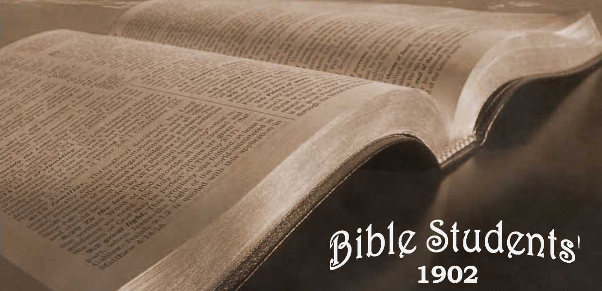

No. 59—The World’s Hope
OLD THEOLOGY QUARTERLY. No. ^ OCTOBER, 1902.
Entered as Second-Class Mail Matter at the P, O., Allegheny, Pa.
SAMPLE TRACTS FREE! SUBSCRIPTION PRICE, SIX CUNTS (3D) PER YEAR, 48 PAGES.
“ We know that the whole creation groaneth and travaileth in tain together until now;" “for the earnest expectation of the creature waitelh for the manifestation of the sons of God." “And the Desire of all nations shall come."—Rom. 8; 22, IQ; Hag. 2:q.
THUS the Apostle and the Prophet refer to the woes of earth and the great remedy which God has provided, and which is soon to be applied. None experienced in life or acquainted with history will dispute the correctness of the Apostle’s statement. And the declaration of the Prophet, that God will eventually establish a reign oi righteousness in the earth which, when realized, will indeed be the desire of all nations, is borne out by the testimony of every prophet and apostle (Acts 3:19-21), and cannot, therefore, be disputed by any who acknowledge the inspiration of the Bible.
The cause of all creation’s groaning and pain is sin ; for all the moral as well as the physical degradation which directly or indirectly causes the pain and groaning of humanity is part of the wages of sin. Humanity is thus under a blight, and suffers both individually and as a whole. Its own imperfect and often unjust governments, as well as its aches and pains of body and mind, are the natural consequences of its blemished, fallen condition. And although men can do something toward general improvement, their efforts are at best but feeble and spasmodic; they are utterly incapable of releasing themselves from their difficulties. Their varying successes—but on the whole futile efforts ■—for the past six thousand years prove this conclusively.
They have never yet, in all the centuries they have had for experiment, succeeded in establishing a perfect government; nor have they silenced the groans and wiped away the tears of the race, nor lifted it up, physically or mentally or morally, to the image of God in which they were created, as represented in Adam. Diseases of every description still prey upon them physically. There are still burning fevers, wasting ulcers, frightful cancers, loathsome skin and poisonous blood diseases; and there are sightless eyes, deaf ears, dumb tongues, broken backs and limbs, and other physical disorders and deformities. Mentally, their condition is still worse: some are crazed ; others are partially so ; and in all the race not one is perfectly balanced. Morally, their condition is no less deplorable: selfishness and greed and pride and love of display and hatred and malice and evil speaking and deceitand envy and contention and war and bloodshed wring agonizing groans from the lips of millions ; and desolate widows and helpless orphans and broken-hearted mothers and grief-stricken fathers and disappointed friends still weep over the graves of buried hopes and fond ambitions.
A BOW OF PROMISE.
Truly, it is a groaning creation still; and yet, as the Apostle suggests, Jt is not hopeless; it is waiting for something, it knows not exactly what—a panacea for sickness and pain and sorrow and death, and a just and righteous government which will lift up the poorest and meanest from the mire of ignorance and squalor, to comfort and happiness and a share of life’s luxuries. It is looking forward to “a good time coming,” “a golden age,” of which even heathen poets and philosophers have dreamed and sung in glowing terms. And some, catching a strain from the divine inspiiation, though unconscious of how it will be brought about, si n g of the blessed Millennium—
“ When, man to man united, And every wrong thing righted, The whole world shall be lighted As Eden was of old.”
But what heathen poets and philosophers, and all mankind, have longed and vaguely hoped for—but have proved themselves utterly incapable ot bringing about, with all their statecraft and priestcraft and multiplied religious ceremonies and forms of godliness without the power—God, through his prophets, has clearly and definitely foretold will come. And further, he has shown exactly how it is to be brought about—that it is to come to pass through the agency of the Lord Jesus Christ, the Messenger of Jehovah, who nearly nineteen centuries ago redeemed the world, giving his life as the ransom-price for the life of the world ; and who will shortly set up his Millennial Kingdom and establish his authority over the redeemed world. He will not oppress the people to exalt himself, as human rulers have done , but will bless “ all the families of the earth” through a wise and righteous administration.—Gen. 22:18; Gal. 3: 8, 16; Psa. 9:8; Isa. 32:1.
Our Lord Jesus by the grac e of God having “ tasted death for every man,” and thus secured the right to give lasting life to all who shall prove themselves wortliv of it. the object of his Millennial reign will be to so instruct, train and discipline men as*to enable them to become worthy of lasting life, on the original conditions--perfection and obedience. To this end he will first “ rule with a rod of iron,” (Psa. 2:9)—with power and force, causing in the overthrow of present imperfect, selfish, proud and unjust systems, “a time of trouble such as never was since there was a nation” (Dan. 12:1); and then he will “fill the earth with the knowledge of the glory of the Lord, as the waters cover the sea.” (Hab. 2:14.) He will restrain and humble the wicked and selfish, and bless and lift up the meek and those seeking righteousness (Zeph. 2:3 ; Matt. 5:5) : finally making an end of sin and all its train of evils, by destroying (complete!) and lorever) all who then, with full knowledge and appreciation, still love sin; and by bestowing upon all who shall then love righteousness “the gift of God,” everlasting life. — Rom. 6:23.
obstaci.es to belief in christ’s millennial kingdom.
All this would seem reasonable to thinking people but for two conditions. One is, that another and an unscriptural
view nas for centuries predominated, and the people have been instructed from infancy in that direction. The second condition is, that so long a period lias elapsed before the establishment of his Kingdom as the remedy for sin and. its disorders. Yet so convinced are people of the propriety of such a divine rulership that, regardless of facts and Scripture, some claim that Christ is now reigning over and ruling the world. And yet, if posted in the world’s history, and candid, all must admit that earth’s government has not been, nor is it yet, a rule of righteousness such as the prophets predicted of the reign of Christ. (Isa. 32:1.) On the contrary, it is very manifest that the kingdoms of this world are all under the power, and subject to the manipulations of the invisible “prince of this world,” Satan, who takes advantage of the darkness of human ignorance, superstition and depravity to rule men through their passions and prejudices.
Poor, frail humanity has indeed made some noble efforts at self-government, but the unseen and unrecognized powers of darkness have been more than a match for its efforts, and have succeeded in keeping in power a majority who are not lovers of righteousness. Nor can we hope for better than present results so long as selfishness is the rule of action.
People naturally wonder that God has not long since exerted his great power (his Kingdom-power and authority) to suppress sin and to lift mankind out of its present state of ignorance, superstition, groveling depravity, disease and death. But they reason that God’s future dealings should be judged by the past, and since six thousand years have passed without such an interposition, they ;hink we cannot expect such a rule or Kingdom in the fu-inre, believing that all things must continue as they now are ami have been from the foundation of the world —2 Pet. 3:4.
But what reply can be made to this objection ? We answer : It can be shown that the Scriptures teach that God has not only promised such a Kingdom for the purpose of blessing the world, but that he also foretold the long period intervening, in which evil has been permitted. And they show good and sufficient reasons for the six~ thousand years’ delay. This, clearly seen, should remove every obstacle to belief in the promised Millennial Kingdom. Yet, in examining the reasons for the delay of the reign of righteousness, let us not forget that it is only as measured by the shortness of the present life that six thousand years seem long. With God, “a thousand years are but as yesterday.”—Psa. 90:4.
WHY THE LONG DELAY?
The long delay and its purposes are clearly marked in the Scriptures. Over four thousand years after the first promise 0(deliverance, thejedemption was accomplished; and nearly two thousand more fill the measure of the Gospel age, for the selection and development of the Gospel church ; while the whole long six thousand years were designed to give the race a necessary experience with the dreadful effects of sin, its exceeding sinfulness, and the firmness of that Justice which will by no means clear the guilty violators of God’s just and holy law—an experience which will be of inestimable value to all, and that to all eternity. By contrast, it will lead to such an appreciation of righteousness, during Christ’s Millennial reign, as to make it, when realized, what the prophet predicted—“ The desire of all nations.”
The delay, from the time of the Calvary-redemption to the Millennial age, while it served this purpose to the world, served also and particularly a further purpose —the development of the Church, a “ little flock” of believers in and followers of Christ, sharers of his reproach in the present time, and therefore chosen and counted worthy to share his spiritual Kingdom and glory and his Millennial work—to reign with him as joint-heirs of the promised Kingdom of God for the blessing of all the families of the earth.—Gen. 28:14; Gal. 3:16, 29.
The selection of this company, as individuals, has been in process during the entire Gospel age now closing, though, as a class, they were foreknown from the foundation of the world. (Eph. 1:4.) That is, God predetermined to exalt to this Kingdom honor and restitution work a certain class, each of whom should meet certain predetermined conditions ; and the Gospel age of nearly two thousand years was appointed as the time for developing, testing and selecting the individuals who should compose that class. The election of these individuals is not arbitrary, but according to fitness; the qualifications being, first, justification by faith in Christ; then meekness and devotedness to God’s service, at thecost of self-sacrifice, even unto death.
Many justified believers) were ‘'called” or invited to share these Kingdom honors, but only the above mentioned, a faith.ui few, will be selected or chosen ; the majority even of professed Christians, we are informed, will fail to make their calling and election sure : and hence will fail to share those Kingdom glories as joint-heirs with Christ their Lord—though with the world they will be blessed and disciplined under this Kingdom. During the Millennial age Christ’s power will be exercised to prevent deceptions, to clear away ignorance, to strengthen the weak and to lead and restore to sight those now blinded by the god of this world, t2 Cor. 4:4.) A thousand enticements to sin which appeal specially to the depraved appetites of the fallen race now, will not be tolerated when the new, heavenly rule is established. But the Gospel church—the Kingdom class—is called and tested during this age, while evil is permitted to hold sway, in order that their testing may be like that of gold tried in the fire. This company will be complete when the present age ends, and the control of earth will then be entrusted to them, under and in co-operation with the Lord Jesus, then the King of kings. —1 Cor. 6:2.
LOOKING FOR THE KINGDOM OF GOD.
No student of the Bible can have overlooked the fact that the constant theme of our Lord and his apostles was the coming Kingdom of God. The Jewish people, as a nation, had for centuries expected Messiah’s coming to be the ruler of the world ; and they naturally expected that as he was to come out of their nation, they would be his soldiers, coworkers and joint-heirs in that Kingdom. They knew themselves to be the natural seed of Abraham, and inferred that they were indispensable to God’s plan. They saw not that spiritual children of God, of the faith and loyalty of Abraham, were meant.
But the real greatness of the promised Kingdom and its work of blessing were not appreciated by Israel: they expected a kingdom similar to the kingdoms of this world ; that Messiah, as a fleshly being of the seed of Abraham, would establish his kingdom at Jerusalem, and that his glory would be the earthly glory of purple and fine linen and gold and silver and the usual accompaniments of earthly royalty. And their pride and ambition longed for the time when this promised king should exalt himself above the Csesars, and exalt them above all the nations of the earth. Hence their rejection of him who came humbly, born in a manger, with no assumption of titles or earthly honors or influence or even friends ; and yet he came proclaiming the Kingdom of Heaven at hand and himself the promised King.
So thoroughly impressed upon the Jewish mind was the thought that Messiah’s coming meant the establishment of a kingdom of righteousness, that several times the “common people’’ would have taken Christ by force to make him king ; but he withdrew that their ardor might cool, knowing that all those who shouted “ Hosanna to the Son [and heir] of David” were not of the class whom the Father designed should be the joint-heirs with him of that Kingdom. He knew, too, that the Father’s time for his exaltation to power had not yet come, and that first he must die to purchase those whom he was afterward to reign over—to whom he might therefore restore the original blessings and favors lost to all through Adam’s failure.— Rom. 5:12-19.
Like others, the twelve apostles held this hope of the Kingdom and believed Christ to be the promised Messiah, the King of kings. And our Lord Jesus, so far from ever contradicting their ideas, always encouraged them, and told them that they should yet sit with him in his throne. But he explained that first he must suffer many things and be rejected of that generation (people), even as it had been written in the prophets, “Thus it behooved Christ to suffer and to rise from the dead and he said to them : O, slow of heart to believe all that the prophets have spoken; was it not needful for Messiah to suffer these things and to enter into his [kingdom] glory?—Luke 24:25, 26.
THE NOBLEMAN’S RETURN.
One ofour Lord’s parables, given just before his crucifixion, was for the very purpose of teaching his apostles that the expected kingdom would be deferred until his second coming. It is introduced thus: “And he spoke this parable unto them because they were near to Jerusalem, and because they thought that the Kingdom of God would be manifested immediately.” (Luke 19:11-27.) That parable represents the Gospel age as the period in which Christ, “ the Nobleman,” went “into a far country” (heaven) to receive for himself a kingdom—to be invested with authority. The parable also shows that during the absence of the Nobleman, the opponents of his rule are in the majority and* hold sway; they even declare that they do not desire him to come and establish his kingdom, preferring to be let alone as they are-»-“ They sent an embassage after him, saying, We do not desire this man’s rule.”
The parable shows, too, the proper attitude of those who love the Nobleman. To his servants he intrusted certain talents—here represented as ten pounds, all of which could, during his absence, be utilized in his service—saying to them. “Trade herewith till 1 come.” (R.V.) Obedient to this command, they are to use their various talents to forward the interests of his coming Kingdom. And finally, the parable shows that the Nobleman will surely return with full power, and that he -will use it to reward, with a share in the Kingdom, those faithful to him. and to destroy all opposed to his rule of righteousness. Thank God, there is good reason to believe that many now enemies to the King of Kings will not be such when present misconceptions are cured by the increased knowledge of the King’s character, plan and kingdom, then to be afforded to all, for which we pray, “Thy Kingdom come !”
THE START OF PRESENT SO-CALLED CHRISTIAN KINGDOMS.
During the first century of its existence the Church held firmly to the apostolic teaching and waited for the second coming of the J,ord Jesus, and the establishment then of the long-promised Kingdom of God and its rule of righteousness, in which triumph all overcoming Christians were to share with Christ. 'The period of that reign, it was generally understood, would be a thousand years.— Rev. 20:2-4.
Chambers' Encyclopedia says, “In the first century of
the Church, Millennarianism (the Greek equivalent of which, Chiliasm from chilioi, a thousand, is the term employed by the ‘fathers,’) was a widespread belief.....The una
nimity which early Christian teachers exhibit in regard to Millennarianism proves how strongly it had hold.”
This was the period of the church’s purity and fervor, before she left her first love. But as time passed and the expected Lord came not, the love of many waxed cold and their hones turned in other directions, d'hen, as Christianity became formalistic, Grecian philosophers came into the church, and the doctrines of Christ became blended with heathen mythologies, producing the foretold great apostasy, or falling away from the true faith. (2 Thess. 2:3.) Nevertheless, there was always a faithful though small minority, which clung to the truth ; for the Lord has never left his truth without ■witnesses.
It was at this time that the degenerated Christian system conceived the view commonly held since, that the Church was to establish Christ’s Kingdom upon the earth, without waiting for the young Nobleman’s return, and that Christ would come after the Millennial reign of the Church had ended—to approve her work, d'his is styled the post-millennarian view of the I.ord’s coming, d'his view introduced into the nominal church an aggressive political policy; and thenceforth the Church sought influence with the civil power—and that successfully, though to her injury and apostasy. It was not long until Christianity was recognized by Constantine, the Roman emperor. Soon, from among several aspiring chiefs, or bishops, the bishop of the city of Rome rose to prominence and influence in religious matters, and finally to influence in the empire. In 534 A.D. the Emperor of Rome, Justinian, recognized the Bishop of Rome as chief bishop, or Pope—-the head of the religious affairs of the Roman empire, whose emperors had long held the office and title of Ponti-fex Maximus, or Chief Priest.
This great success, though accomplished by cunning, trickery and scheming political intrigue wholly foreign tc the spirit of true Christianity, and in opposition to the express counsel of the Lord and the apostles (Matt. 20: 25-28; 23:8-12 and 1 Pet. 5:3), was hailed as the begin-
ning of the establishment of Christ’s kingdom in power. By this time, be it remembered, the nominal church numbered millions who were Christians in name merely and were totally ignorant of the doctrines of Christ; for the clergy had gradually lowered the true standard, amalgamated errors and exalted themselves, to gain popularity and to draw the people, through fear and superstition, to their support. And when the imperial authority began to recognize the apostate church and to concede its false claims, the unregenerate heathen millions rushed into her bosom, adding to her defilement their uncircumcised views and heathen superstitions.
THE COUNTERFEIT OR ANTICHRIST KINGDOM SET UP.
But though nominal Christianity had now gained freedom from persecution, civil recognition and, finally, religious jurisdiction as Papacy, her ambition, sustained by her post-millennial error, was far from satisfied. Scheming, plotting, etc., continued, under the theory that the end to be gained (the subjugation of the world in the name of Christ’s Kingdom) justifies the means; until the power, authority and crowns of the civil rulers of Europe were subjected to the popes. The beginning of this temporal power was gradual, from A.D. 539, but it was fully established in A. D. 800, when Charlemagne, king of France, was crowned by Pope Leo III., and accepted from him, and by his supposed divine authority, the title of Emperor of the West. There, really, what was afterwards known as “The Holy Roman Empire" had its beginning.
Thenceforth it was boldly claimed and generally admitted (except by the Lord’s faithful few, who discerned the apostasy and waited for the establishment in righteousness of his true, promised kingdom) that the (nominal) church was God’s Kindom in the world, and that the popes successively represented Christ as King of kings, while, as his joint-heirs, cardinals and bishops filled the places promised to the overcomers. In support of these claims, the universal authority of the popes in matters both secular and religious was claimed and admitted ; and kings and emperors representing the greatest nations of Europe and the world prostrated themselves at the feet of the pope, acknowledging him as King of kings. Every title which
the Scriptures apply to the true Christ, and every prophecy describing his future kingdom and its glory, have been applied by the popes to themselves and the kingdom thus introduced, which was none other than the kingdom of Antichrist, the counterfeit of the true, predicted by the prophets and the apostles. (See 2 Thess. 2:3-7; Dan. 7: 25, 26; Rev. 13: 4-8.) The deception was so great and magnificent that all the nations of Europe were deceived; and as the Lord himself foretold, had it been possible, the very elect (the faithful) would also have been deceived by it.
But the inevitable came : the reverence and flattery of the people, the pride and power of the clergv, and especially ot the higher dignitaries, gradually sunk the doctrines and practices so low as to excite the disgust and open the eyes of the honest and blinded souls connected with the system. It was nearly a century after the invention of printing, when men were beginning to think for themselves, that the public sale of indulgences by the authority of the pope for the purpose of raising money for the completion of St. Peter’s Cathedral at Rome, and particularly by one John Tetzel, a Dominican monk of notorious character and shameless effrontery, aroused general indignation. Then under the bold leadership of Luther, Zwingli, Carlstadt, Melanchthon, and others, a reformation movement set in which, though beset by many hindrances, is not yet extinct, thank Cod. It is progressing steadily toward the utter repudiation of priestcraft and the various superstitions and errors of the dark ages, back to the old landmarks of primitive simplicity and purity which characterized the apostolic Church, both in life and in doctrines.
REFORMATION NOBLY BEGUN.
Luther, Knox, Melanchthon, Zwingli, Calvin, and others of their time, though still befogged by the errors of Antichrist, which for so many centuries held the world as under a mesmeric power, made remarkable progress out of darkness toward the full, clear light When all the circumstances of their time are considered, it cannot be denied that they were remarkable men, and that they took not only a courageous step, but a long one in the right direction. The trouble is that those who since have followed these leaders have taken their names as sects, without having their spirit of reform. So far from continuing the reform movement, each party, or sect set itself against all light, truth and reformation in advance of what its leader had seen and advocated. Hence reform almost ceased with the reformers of the sixteenth century. What progress has since been made has been in opposition, not only to Papacy, but to professed Protestants as well.
But the course of the reformers was not a wholly uncompromising one. They soon saw that the masses of the people were so steeped in ignorance that they could not appreciate the Scriptural teaching that God is no respecter of persons; that in his sight all men are free, and that king, peasant and slave are on a common footing before God. So long had people been taught that the pope and church dignitaries represented God, and must be obeyed as God ; so long had they been taught that kings and princes, when crowned and commissioned by the pope, were God’s appointed rulers, reigning by God’s authority in matters civil, as the “clergy” by the same authority reigned as princes in matters religious; so long had they been taught that to deny or oppose such pope-sanctioned authority was to deny or oppose God and his Kingdom, that (under this ignorance and superstition) to have declared the whole truth would have involved all Europe in anarchy and lawlessness. Stepping out of such deep slavery of mind and body into full liberty, the masses were far from prepared to use it wisely.
This, indeed, was the basis of the conflict between the early reformers. Zwingli in Switzerland was a representative of some who took their stand for full liberty; he denied not only the authority of the pope to rule the church, but also his authority to appoint civil rulers in the name of God. He claimed for the people the right to elect their rulers, as is done in this great American Republic. He’e Luther wavered for a time as to what course to pursue when he saw that the reform, fully carried out, would take away the authority not only of the pope, but also the authority of all the princes and kings of earth appointed by him. While retired for ten months in Wartburg Castle under the hiding and protection of Elector Frederick, Luther reflected on the situation carefully; then he came forth to oppose Zwingli, Carlsiadt and othe s under whose preaching the images in the churches were being dashed to pieces and the Mass abolished. His plea was moderation. He cooled the rising ardor of the Germans, and with Melanchthon turned the German Reformation into the channel which it finally took. The German princes, on the one hand glad to be freed from the abject bondage to Papacy, and on the other hand glad to escape the growing tendency of teachings such as Zwingli’s, toward Republicanism, recognized in the teaching of Luther and Melanchthon a way of escape from both, which would still preserve their powers, and even increase them. From policy, therefore, many of the German princes embraced the Lutheran cause which prospered, while the yet more thorough reformers and their works went down.
Why did not God forward the greater and purer views? it may be asked. Because it was not then due time, we answer. But slowly, after three centuries, thinking people will admit that Zwingli and Carlstadt were much nearer the truth, much more thorough teachers of reform than Luther. D’Aubigne (Hist., Vol. 3., p. 243) upon this subject cautiously but forcibly remarks: “Notwithstanding his opposition to Papacy, Luther had a strong conservative instinct. Zwingli, on the contrary, was predisposed to radical reforms. Both these divergent tendencies were needed. If Luther and his followers had been alone in the work, it would have stopped short in its progress, and the principle of reformation would not have wrought its destined effect. ’ ’
Luther, though he had denounced the papacy as Antichrist, and declared that the popes had no right or authority whatever to rule the world in the name of Christ, was led by his course of moderation into doing the very thing he had condemned in Papacy. The princes who remained in harmony with Papacy, were forward to claim its sanction as the true basis of authority over the people; and those who espoused Luther’s side of course looked to him who claimed to represent the true reformed Church, to pronounce in their favor—as the choice of the true Church, and hence the divine choice. Having taken the stand he did, escape from the dilemma was impossible; and there was considerable truth in Luther’s joke, when, later on, he called himself
“the german pope.”
Thus it came that Protestantism continued the very error that lay at the foundation of the great apostasy—the very error it started out to remedy. Instead of advocating freedom—government of and by the people—it arrayed itself on the side of those falsely styled kingdoms of God whose rulers were glad to have assistance in holding the control which Antichrist had given them over the people. They desired to hold forever, for themselves and their families, the fat positions already attained. Hence, each of the various governments of Europe is wedded to some religions system, which it supports, and at the hands of whose officers, with religious pomp and ceremony, titles and offices are entered upon. No matter how villainous, or imbecile or insane or opposed to both the letter and spirit of God’s Word, these announce their authority to perpetuate wrongs under the hypocritical mask (authorized first by Papacy, and since conceded by all Protestant sects) —king, queen or emperor, “Zff the grace of God.'
Thus we find today many so-called Christian kingdoms in the world, as well as many churches, though our Lord only established one church, which in due time was to be completed and glorified to constitute the one promised Kingdom of God. In the light of God’s Word we must deny that kings and emperors now reign by the grace of God, or that God is in any degree responsible for their misruling. though he predetermined to pennit these various experiments at self government for an appointed time— “ until he come, whose right it is.” (Ezek. 21:27.1 The facts of history corroborate the testimony of the Scriptures that present governments are under the control of “ti e prince of this world. ’ (John 14:30; Eph. 2:2 ) To deceive the people and to control them more thoroughly, Satan favors and advances to place and power those persons and systems agreeable to his plans; and to make the deception complete, he does this in the name of God and at the hands of the apostate church.—2 Cor. 11:14, 15.
NOT KINGDOMS OF CHRIST, BUT OF FALLEN MEN UNWITTINGLY RULED BY SATAN.
How much of the spirit of Christ do these kingdoms manifest ? Hear louder and louder down the centuries the clash of arms, the thunder of artillery, the tread of mighty armies, and the groans of the dying, in the strife of these so-called kingdoms of God to annihilate each other ; and remember, that at no other period of the world’s history were there ever, as today, armies numbering eleven or twelve millions of men, thoroughly equipped, and ready at a moment’s call, to rush to battle, armed with weapons of carnage many-fold more dreadful and destructive than were ever before known, which make them equal to a hundred millions in former times.
Mark the oppression and injustice and tyranny and misrule ; and behold how giant evils are licensed to enslave and degrade and oppress mankind, and say not that these are Immanuel’s kingdoms. Surely they bear little resemblance to the character of that Kingdom promised under the “ Prince of Peace !”
When Christ’s Kingdom has come, it will indeed be “ the desire of all nations.” It will be just what all men need. At first it will rule with a rod of iron, dashing the now tottering kingdoms of this world in pieces like a potter’s vessel (Psa. 2:9), breaking up civil, social and religious systems of tyranny and oppression, putting down all authority and power opposed to it, humbling the proud and high-minded, and finally teaching all the world to be still and know that the Lord’s Anointed has taken the dominion. (Psa. 46:10.) Then the blessing of his peaceful reign will begin to be experienced. Truth and equity will be established on a sure and permanent footing; “justice will be laid to the line, and righteousness to the plummet (Isa. 28:17); ar*d the great restitution work will progress grandly to its glorious consummation. There will be sweeping moral reforms, great educational and philanthropic enterprises, wonderful faith-cures from every disease and deformity, mental and physical. There will be awakenings also from death, and a grand reorganization of society under the new order of the Kingdom of God. And all the world’s bitter experience during the six thousand years past will prove valuable lessons on the ' exceeding sinfulness of sin; helping them to appreciate the new rule of righteousness, and to live in everlasting conformity to the perfect will of God, and thus to accept God’s gift of everlasting life, designed for all who will receive it on his conditions of love and loyalty and obedience to him. Then, “Whosoever will, let him take the water of life freely.”—Rev. 22:17.
Such being the grand object of our Lord’s return and the establishment of his Kingdom, we believe with the Prophet, that it will be “ The desire of all nations and with the Apostle that the earnest expectation of the creature longs, though ignorantly, for the coming revelation of the sons of God—the overcoming Church exalted with her Lord.
A clearer knowledge of the world’s hope should and. does increase the Church’s appreciation of God’s loving arrangement for his creatures. And it adds new luster to • the Church’s hope when we realize that the glorious object of the call and discipline of the Church in this Gospel age is for the development of characters which, being proved loyal to God and to righteousness and truth, will be associated with Christ, in the Millennial age now dawning, in the great and grand work of uplifting whosoever will of men, from ignorance and sin and degradation to God’s likeness and favor and love.
The Apostle declares “ He that hath this hope in him purifieth himself.” (1 John 3:3.) It is a hope that helps onward to God and holiness. All interested in the further study of this “ blessed hope ” should address us for reading matter. A postal card request will bring you free, A Reply to Ingersoll or the Wonderful Story (poem, 156 verses), or What Saith the Scriptures Concerning Hell?
Write. We will be glad to respond and encourag in the way of life.
WATCH TOWER BIBLE AND TRACT SOCIETY,
BIBLE HOUSE, ARCH ST., ALLEGHENY, PA.
BRANCHES;—LONDON, N.W.: ELBERFELD; COPENHAGEN; STOCKHOLM;
YVERDON-SUISSE ; MELBOURNE.